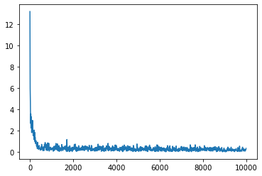

之前有一段时间，我需要复习梯度下降和反向传播来应付面试。 虽然梯度下降和反向传播都属于基础，但要想顺畅地在有限时间内把它写出来，还是挺不容易，必须要提前准备才行。本文记录了笔者的复习成果。
在编写代码的过程中，尤其要注意数组尺寸的正确性。计算和编写代码的过程中，犯错常有的。最好能通过梯度检查来校验梯度计算的正确性，这样我们才有信心根据计算得到的梯度进行梯度下降。
本文代码以示范为目的，并不适用于工程实践，因此文中的程序不会追求扩展性、运行效率等，而是尽量简洁明了。
本文尝试通过numpy库实现梯度下降，不依赖任何深度学习工具。我们先import numpy.
import numpy as np
np.random.seed(0)1 多层感知机的前向计算
本节将实现一个多层感知机，用它来回归sin函数。
为简便起见，这个多层感知机只使用relu激活函数。
1.1 建立模型
def relu(x):
return np.clip(x, 0, None)以下代码定义了MLPRegression类的初始化函数。我们通过硬编码的方式将这个多层感知机设置为3层，并规定每层的输入输出维度。
class MLPRegression:
def __init__(
self,
):
self.w1 = np.random.randn(1, 16)
self.b1 = np.random.randn(16, 1)
self.w2 = np.random.randn(16, 32)
self.b2 = np.random.randn(32, 1)
self.w3 = np.random.randn(32, 1)
self.b3 = np.random.randn(1, 1)在前向传播阶段，这个多层感知机在每一层线性层后应用了一个relu激活函数。最后一层是例外的，没有任何激活函数，这样就不会限制模型拟合函数的值域。
与一般的torch代码不同，我们在forward过程中需要手动保存cache变量，记录模型的中间执行结果。在反向传播过程中，我们需要使用它们来计算梯度。
def mlp_regression_forward(self, x, y=None):
d_in, bs = x.shape
h1 = self.w1.transpose() @ x + self.b1 # d_1, bs
a1 = relu(h1)
h2 = self.w2.transpose() @ a1 + self.b2 # d_2, bs
a2 = relu(h2)
h3 = self.w3.transpose() @ a2 + self.b3 # 1, bs
cache = {
'x': x,
'h1': h1,
'a1': a1,
'h2': h2,
'a2': a2,
'h3': h3,
'y': y
}
if y is not None:
loss = np.mean(np.abs(y - h3))
else:
loss = None
return h3, loss, cache
MLPRegression.forward = mlp_regression_forward接下来我们试运行一下forward函数。函数返回pred，loss，cache三个变量，分别对应模型的预测值，损失以及用于计算梯度的中间变量。
r = MLPRegression()
pred, loss, cache = r.forward(np.random.random((1, 2)))
for k, v in cache.items():
print(k, v.shape if v is not None else 'None')x (1, 2)
h1 (16, 2)
a1 (16, 2)
h2 (32, 2)
a2 (32, 2)
h3 (1, 2)
y None2 多层感知机的反向传播
反向传播代码是本文的重点。在编写反向传播代码之前，我们先复习几个重要函数的梯度计算。
2.1 MAE函数的梯度
代码中，我们使用的损失函数为MAE，即 \[ l=\frac{1}{m} \sum_i^m |\hat y - y| \] 易知其导数为 \[ \frac{\mathrm d l}{\mathrm d \hat y} = \left\{ \begin{aligned} 1&, \hat y > y \\ -1&, \hat y < y \end{aligned} \right. \] 姑且不考虑0点処该函数没有导数的问题。
2.2 ReLU函数的梯度
ReLU函数的公式为： \[ a=\text{ReLU}(h)=\max(0, h) \] 易得其导数（同样不考虑\(h=0\) 时没有导数的问题）为 \[ \frac{\mathrm d a}{\mathrm dh} = \left\{ \begin{aligned} 1 & ,h > 0 \\ 0 & ,h < 0 \end{aligned} \right. \]
2.3 线性层的梯度
设MLP的一层线性变换为 \[ \vec y=\mathbf W^T \vec x + \vec b, \] 其中\(\vec b\in \mathbb R^{d_\text{out}}, \vec x\in \mathbb R^{d_\text{in}, 1}\) , 应用链式法则，可以求得以下梯度： \[\begin{aligned} \frac{\partial l}{\partial \mathbf W} &= \vec x \left(\frac{\partial l}{\partial \vec y}\right)^T\\ \frac{\partial l}{\partial \vec b} &= \frac{\partial l}{\partial \vec y}\\ \frac{\partial l}{\partial \vec x} &= \mathbf W \left(\frac{\partial l}{\partial \vec y}\right) \\ \end{aligned}, \] 其中\(l\)为模型的损失。
2.4 反向传播代码
根据以上推导，可以写出如下的反向传播代码。该函数返回一个dict用于存储各个变量的梯度。
def mlp_regression_backward(self, cache):
y = cache['y']
_, bs = y.shape
pred = cache['h3']
dh3 = 1. / bs * (
np.int64(pred > y)
- np.int64(pred < y)
) # 1, m
# w3.T @ a2 + b3 = h3
dw3 = cache['a2'] @ dh3.T # d_2, 1
db3 = dh3.sum(axis=-1, keepdims=True) # 1, 1
da2 = self.w3 @ dh3 # d_2, bs
# a2 = relu(h2)
dh2 = da2 * (cache['h2'] > 0) # d_2, bs
# h2 = w2.T @ a1 + b2
dw2 = cache['a1'] @ dh2.T # d_1, d_2
db2 = dh2.sum(-1, keepdims=True) # d_2, 1
da1 = self.w2 @ dh2 # d_1, bs
# a1 = relu(h1)
dh1 = da1 * (cache['h1'] > 0) # d_1, bs
# h1 = w1.T @ x + b1
dw1 = cache['x'] @ dh1.T # d_in, d_1
db1 = dh1.sum(-1, keepdims=True) # d_in, 1
return {
'dw3': dw3, 'db3': db3,
'dw2': dw2, 'db2': db2,
'dw1': dw1, 'db1': db1
}
MLPRegression.backward = mlp_regression_backward
r = MLPRegression()
yh, loss, cache = r.forward(
np.array([1, 2]).reshape(1, 2),
y=np.array([2, 3]).reshape(1, 2),
)
grads = r.backward(cache)
for k, v in grads.items():
print(k, v.shape)dw3 (32, 1)
db3 (1, 1)
dw2 (16, 32)
db2 (32, 1)
dw1 (1, 16)
db1 (16, 1)2.5 梯度检查
一次性正确写完梯度反传并不容易。梯度检查是校验梯度计算正确性的重要方法。 根据梯度的定义，设损失函数为\(J\) ，那么梯度可以用如下方法估计： \[
\frac{\partial J(x;\vec \theta)}{\partial \theta_i} \approx \frac{J(x;[\theta_1, \theta_2, \cdots, \theta_i + \epsilon, \cdots, \theta_n]) - J(x;[\theta_1, \theta_2, \cdots, \theta_i - \epsilon, \cdots, \theta_n] )}{2\epsilon}
\] 下面提供的parameters_to_vector，restore_parameters_from_vector函数实现了将模型参数转化为向量和从向量恢复模型参数的功能。grads_to_vector和vector_to_grads也起类似作用。基于此我们可以实现梯度检查。
def parameters_to_vector(self):
ret = [self.w1, self.b1, self.w2, self.b2, self.w3, self.b3]
ret = [it.reshape((-1,)) for it in ret]
return np.concatenate(ret)
MLPRegression.parameters_to_vector = parameters_to_vector
def grads_to_vector(self, grads):
ret = [grads[k] for k in ['dw1', 'db1', 'dw2', 'db2', 'dw3', 'db3']]
ret = [it.reshape((-1,)) for it in ret]
return np.concatenate(ret)
MLPRegression.grads_to_vector = grads_to_vector
def vector_to_grads(self, vec):
params = [self.w1, self.b1, self.w2, self.b2, self.w3, self.b3]
names = ['dw1', 'db1', 'dw2', 'db2', 'dw3', 'db3']
param_sizes = [it.size for it in params]
param_offsets = [0] + param_sizes
for i in range(len(param_offsets) - 1):
param_offsets[i + 1] += param_offsets[i]
grads = [vec[param_offsets[i]:param_offsets[i + 1]].reshape(p.shape) for i, p in enumerate(params)]
return {k: v for k, v in zip(names, grads)}
MLPRegression.vector_to_grads = vector_to_grads
def restore_parameters_from_vector(self, vec):
params = [self.w1, self.b1, self.w2, self.b2, self.w3, self.b3]
param_sizes = [it.size for it in params]
param_offsets = [0] + param_sizes
for i in range(len(param_offsets) - 1):
param_offsets[i + 1] += param_offsets[i]
params2 = [vec[param_offsets[i]:param_offsets[i + 1]].reshape(p.shape) for i, p in enumerate(params)]
w1, b1, w2, b2, w3, b3 = params2
self.w1 = w1
self.b1 = b1
self.w2 = w2
self.b2 = b2
self.w3 = w3
self.b3 = b3
MLPRegression.restore_parameters_from_vector = restore_parameters_from_vector
r = MLPRegression()
x = np.random.randn(1, 2)
y = np.random.randn(1, 2)
yh, loss, cache = r.forward(x, y)
grads = r.backward(cache)
grads_vec = r.grads_to_vector(grads)
grads_est = grads_vec * 0
parameters_vec = r.parameters_to_vector()
print(grads_vec.shape)
num_parameters = len(grads_vec)
eps = 1e-4
for i in range(num_parameters):
parameters_vec_copy = parameters_vec.copy()
parameters_vec_copy[i] += eps
r.restore_parameters_from_vector(parameters_vec_copy)
_, loss, _ = r.forward(x, y)
parameters_vec_copy = parameters_vec.copy()
parameters_vec_copy[i] -= eps
r.restore_parameters_from_vector(parameters_vec_copy)
_, loss2, _ = r.forward(x, y)
grad = (loss - loss2) / (2 * eps)
grads_est[i] = grad
difference = np.max(np.abs(grads_vec - grads_est))
print('Diff:', difference)(609,)
Diff: 3.414629690112747e-11由代码输出可见，文章给出的梯度计算方法与梯度估算法的结果相差无几，这证明了本文推导的正确性。
3 训练
以下程序以最基础的SGD方法训练了给出的模型，并打印损失函数。
import tqdm.notebook as tqdm
learning_rate = 1e-3
r = MLPRegression()
total_iters = 10000
pbar = tqdm.tqdm(total=total_iters)
loss_records = []
for i in range(total_iters):
x = np.random.rand(1, 16) * 10 - 5
y = np.sin(x)
yh, loss, cache = r.forward(x, y)
grads = r.backward(cache)
for k, v in grads.items():
assert k.startswith('d')
param_name = k[1:]
param = getattr(r, param_name)
assert param.shape == v.shape, (param.shape, v.shape)
setattr(r, param_name, param - v * learning_rate)
if i % 10 == 0:
loss_records.append((i, loss))
pbar.set_description(f'loss: {loss:.4f}')
pbar.update()import matplotlib.pyplot as plt
loss_records = np.array(loss_records)
plt.plot(loss_records[:, 0], loss_records[:, 1])
训练完成后，模型的推理效果如图所示。由图可见，模型成功拟合了 函数。
这里模型的拟合效果并不完美。毕竟这只是一个三层的小型MLP，它还是有很大改进空间的。
x = np.linspace(-5, 5, 1000)[None, :]
y, _, _ = r.forward(x)
plt.figure()
x = x.reshape((-1,))
y = y.reshape((-1,))
plt.plot(x, np.sin(x))
plt.plot(x, y)
plt.legend([
'sin(x)',
'pred'
])
plt.show()
4 附录
附录提供了正文未使用到的一些常用函数的梯度推导。这些推导对实现分类器会有帮助，但本文就不给出详细实现了。
4.1 Sigmoid的梯度推导
设\(\sigma(x)=\frac{1}{1+e^{-x}}\)是sigmoid函数。那么\(\sigma(x)\) 的导数为 \[\begin{aligned} \sigma'(x) &= \frac{e^{-x}}{(1 + e^{-x})^2} \\ &= \frac{1}{1 + e^{-x}} \frac{e^{-x}}{1+e^{-x}} \\ &= \sigma(x)(1-\sigma(x)) \end{aligned} \]
4.2 二值交叉熵函数的梯度推导
假设模型的最后一层激活函数为sigmoid函数，即\(\vec a = \sigma(\vec h)\). 损失函数为： \[ J(\vec a)=-\frac{1}{m} \sum_i^m \left( y_i \log (a_i) + (1-y_i)\log(1 - a_i) \right) \] 于是 \[ \frac{\partial J}{\partial a_i} = -\frac{1}{m} \left( y_i \frac{1}{a_i} -(1 - y_i)\frac{1}{1-a_i} \right) \] \[ \begin{aligned} \therefore \frac{\partial J}{\partial h_i} = \frac{\partial J}{\partial a_i} \frac{\partial a_i}{\partial h_i} & = -\frac{1}{m} \left( y_i \frac{1}{a_i} -(1 - y_i)\frac{1}{1-a_i} \right) (a_i)(1 - a_i) \\ &= -\frac{1}{m} \left(y_i(1-a_i) - (1 - y_i)a_i \right)\\ &= -\frac{1}{m} \left(y_i - y_ia_i - a_i + y_ia_i\right) \\ &= \frac{1}{m} (a_i - y_i) \end{aligned} \] \[ \therefore \frac{\partial J}{\partial \vec h} = \frac{1}{m}(\mathbf A - \mathbf Y) \] 假设\(\mathbf A\) 是由特征\(\vec x\)经过一层线性层，再经过softmax激活函数得来的，即 \[ \mathbf A=\sigma(\vec h) = \sigma( \vec w^T\mathbf X+ \vec b), \] 那么 \[ \begin{aligned} \therefore \frac{\partial J}{\partial \vec w} &= \frac{1}{m}\mathbf X(\mathbf A- \mathbf Y)^T \\ \frac{\partial J}{\partial \vec b} &= \frac{1}{m}(\mathbf A - \mathbf Y) \end{aligned} \]